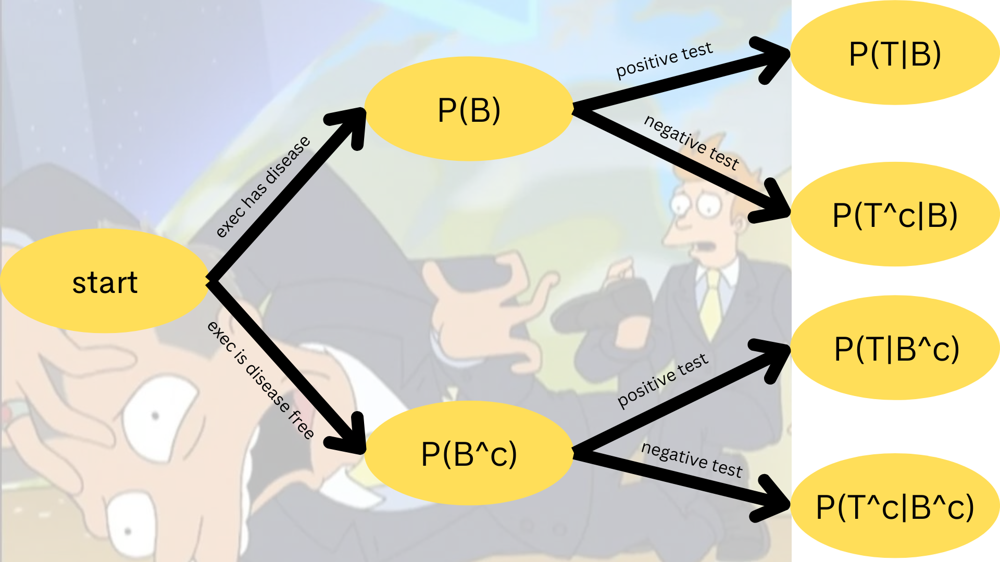
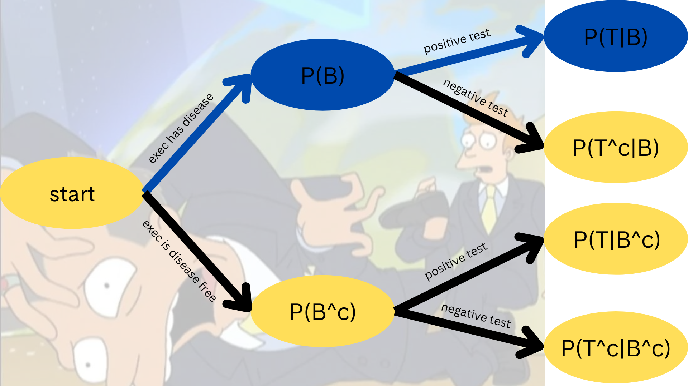
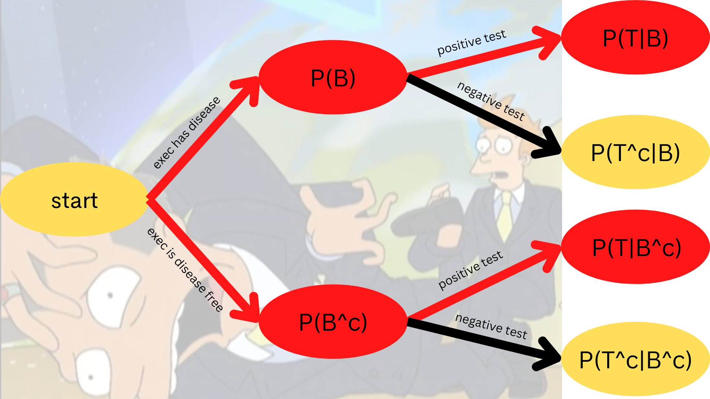
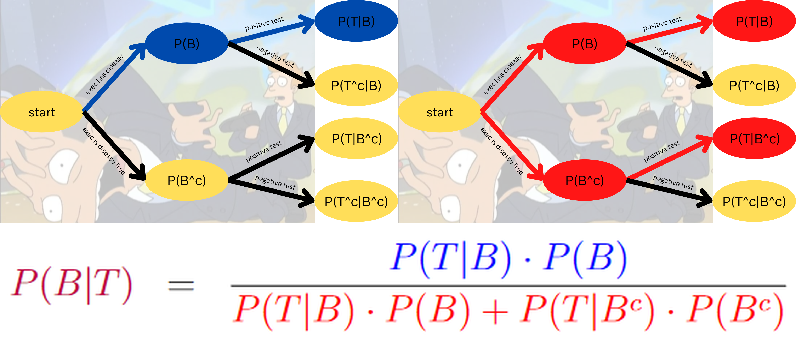
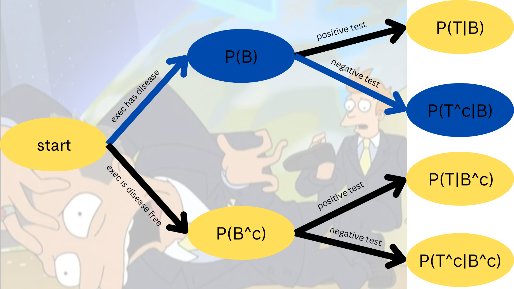
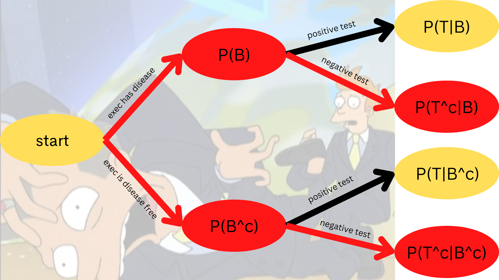
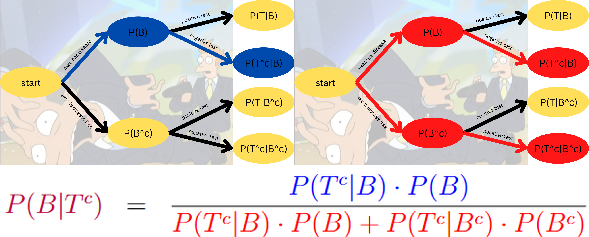
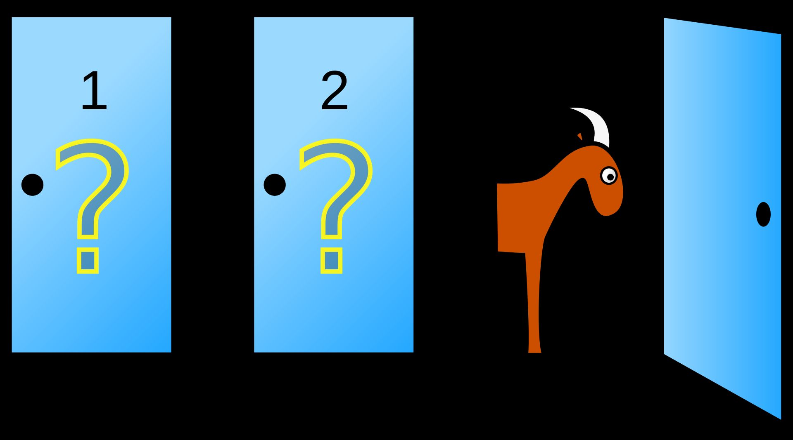

Bayes’ Rule
In the previous section, we studied conditional probability \[P(B|A) = \displaystyle\frac{P(A \text{ and } B)}{P(A)}\] and we talked about how the inverse probabilities \(P(A|B)\) and \(P(B|A)\) are almost never equal. In this section, we discuss how to properly think and calculate that inverse probability.
Another look at conditional probability is \[P(A \text{ and } B) = P(B|A) \cdot P(A)\] This is read as “The probability of the intersection \(A\) and \(B\) is the probability of event \(B\) conditioned on event \(A\).”
Moreover, if we consider how if event \(B\) is dependent on event \(A\), then sometimes \(B\) happens when \(A\) happens and sometimes when \(A\) does not occur. More succinctly, the total probability of event \(B\) is \[P(B) = P(B|A) \cdot P(A) + P(B|A^{c}) \cdot P(A^{c})\]
Staring with the conditional probability formula \[P(B|A) = \displaystyle\frac{P(A \text{ and } B)}{P(A)}\] Bayes’ Rule combines the ideas of conditioned probability and total probability as \[P(A|B) = \displaystyle\frac{P(A \text{ and } B)}{P(B)} = \displaystyle\frac{P(B|A) \cdot P(A)}{P(B|A) \cdot P(A) + P(B|A^{c}) \cdot P(A^{c})}\]
A Deep Dive
An executive has their blood tested for boneitis. Let \(B\) be the event that an executive has the disease, and let \(T\) be the event that the test returns positive. Laboratory trials yielded the following information:
\[P(T|B) = 0.70 \quad\text{and}\quad P(T|B^{c}) = 0.10\]
Assume a prior probability of \(P(B) = 0.0032\). Compute \(P(B|T)\)




More Practice
An executive has their blood tested for boneitis. Let \(B\) be the event that an executive has the disease, and let \(T\) be the event that the test returns positive. Laboratory trials yielded the following information:
\[P(T|B) = 0.70 \quad\text{and}\quad P(T|B^{c}) = 0.10\]
Assume a prior probability of \(P(B) = 0.0032\). Compute \(P(B|T^{c})\)



Example: Spam Filtering
In 2002, Paul Graham used Bayes’ Rule as part of his algorithms to greatly decrease false positive rates of unwanted e-mails (“spam”). Let \(H^{c}\) be the event that an e-mail is “spam”. Let \(W\) be the event that an e-mail contains a trigger word such as “watches”. Suppose that
- the probability that an e-mail contains that word given that it is spam is 17%
- the probability that an e-mail contains that word given that it is not spam is 9%
- the probability that a randomly selected e-mail message is spam is 80%
Find the probability that an e-mail message is spam, given that the trigger word appears.
Example: Quality Control
A manufacturing process produces integrated circuit chips. Over the long run the fraction of bad chips produced by the process is around 20%. Thoroughly testing a chip to determine whether it is good or bad is rather expensive, so a cheap test is tried. All good chips will pass the cheap test, but so will 10% of the bad chips. Given that a chip passes the test, what is the probability that the chip was defective?
Example: DUI Checkpoint
A breath analyzer, used by the police to test whether drivers exceed the legal limit set for the blood alcohol percentage while driving, is known to satisfy
\[P(A|B) = P(A^{c}|B^{c}) = x\]
where \(A\) is the event “breath analyzer indicates that legal limit is exceeded” and \(B\) “driver’s blood alcohol percentage exceeds legal limit.” On Saturday nights, about 4% of the drivers are known to exceed the limit.
- Describe in words the meaning of \(P(B|A)\)
- Determine \(P(B|A)\) if \(x = 0.90\)
- How big should \(x\) be so that \(P(B|A) \geq 0.95\)?
Example: Monty Hall Problem

Monty Hall asks you to choose one of three doors. One of the doors hides a prize and the other two doors have no prize. You state out loud which door you pick, but you don’t open it right away.
“Monty opens one of the other two doors, and there is no prize behind it.“At this moment, there are two closed doors, one of which you picked. The prize is behind one of the closed doors, but you don’t know which one. Monty asks you, ‘Do you want to switch doors?’”
- switch doors
- do not switch doors
Generalized Bayes’ Rule
If we are conditioning \(B\) on an event \(A\), where the latter can be partitioned into several subsets,
\[A = \{ A_{1}, A_{2}, ..., A_{j} \}\]
then the total probability is
\[P(B) = P(B|A_{1}) \cdot P(A_{1}) + P(B|A_{2}) \cdot P(A_{2}) + ... + P(B|A_{n}) \cdot P(A_{n})\]
and Bayes Rule for computing the probability of \(A_{i}\) given \(B\) becomes
\[P(A_{i}|B) = \displaystyle\frac{ P(B|A_{i}) \cdot P(A_{i}) }{ P(B|A_{1}) \cdot P(A_{1}) + P(B|A_{2}) \cdot P(A_{2}) + ... + P(B|A_{n}) \cdot P(A_{n}) }\]
Bayesian Odds
The Bayesian odds of event \(A\) to event \(B\) given that event \(C\) has already taken place is \[\displaystyle\frac{ P(A|C) }{ P(B|C) }\]